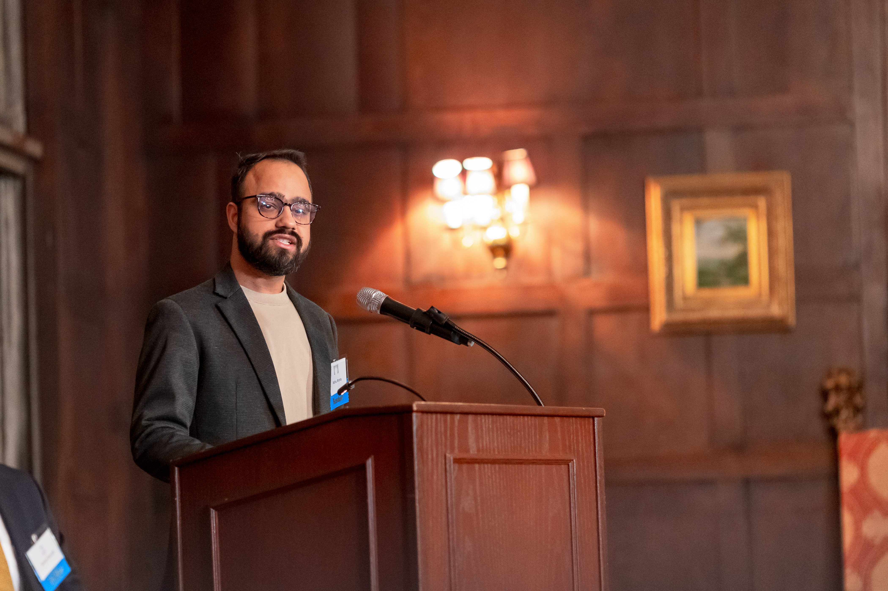
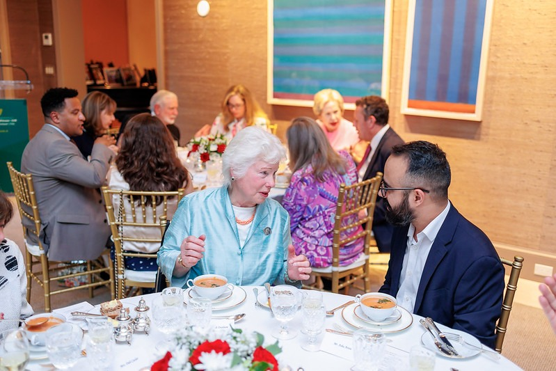
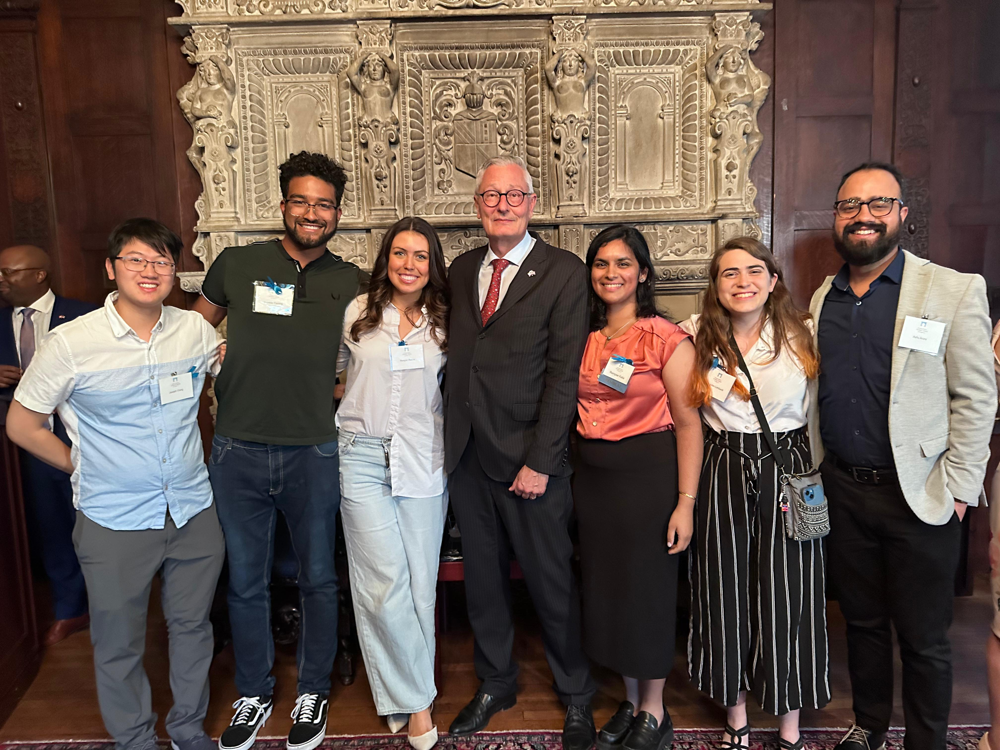

Do the Feldstein-Horioka Results Still Hold After COVID?
Panel-data research on saving, investment, and capital mobility across OECD countries. [ADD PROJECT DETAILS]
Research overviewProjects
Selected academic, quantitative, policy, and institutional work. Specific project details will be added as materials become available.
Panel-data research on saving, investment, and capital mobility across OECD countries. [ADD PROJECT DETAILS]
Research overview

International perspective
Work across policy and professional environments informs a grounded understanding of the questions research seeks to answer.
[ADD EXPERIENCE CONTEXT]
Professional networks
Professional exchanges bring research questions into dialogue with diverse perspectives and policy environments.
[ADD EVENT CONTEXT]
